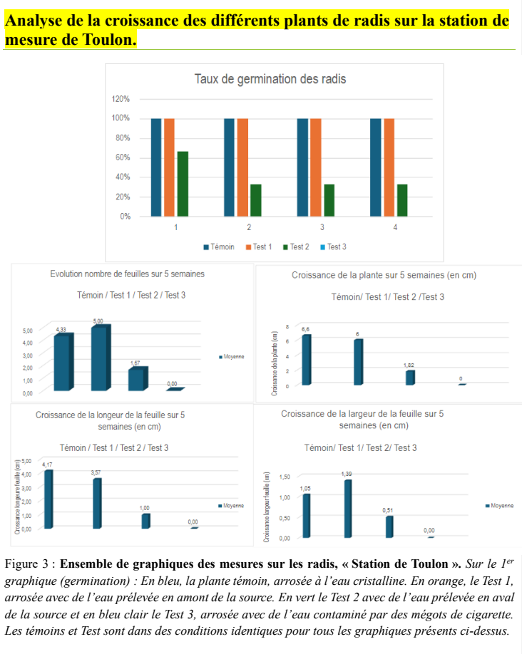
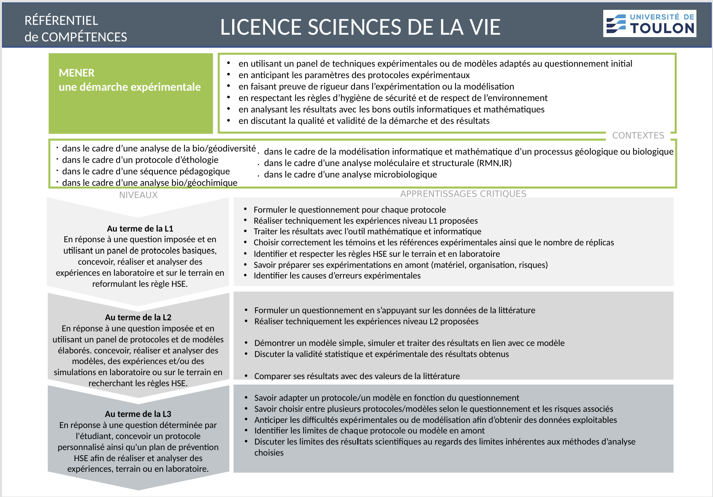
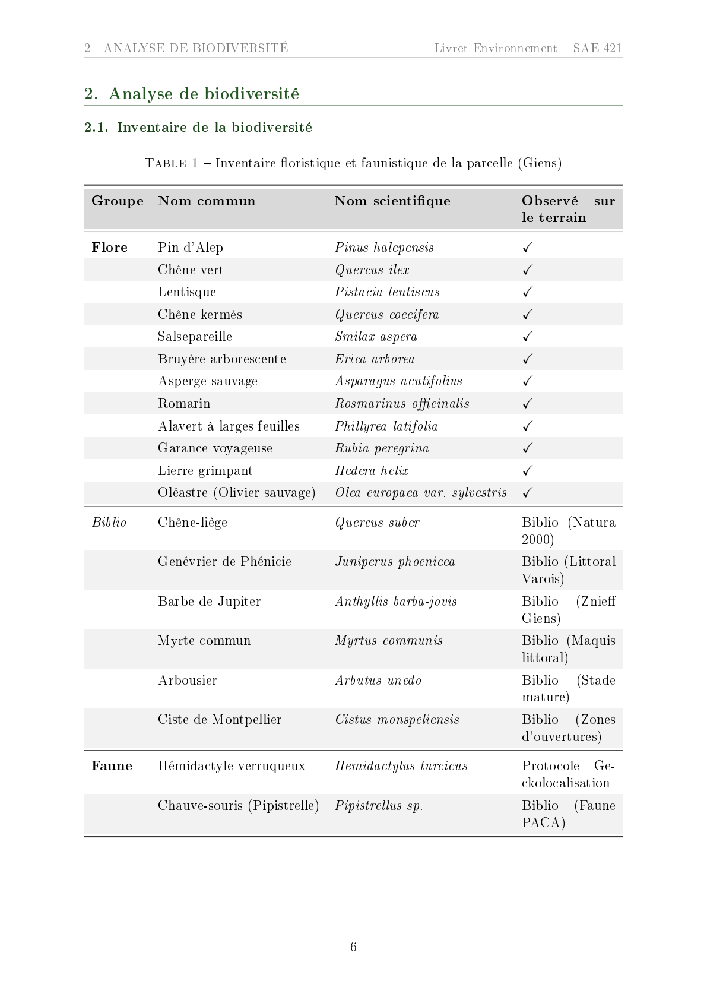
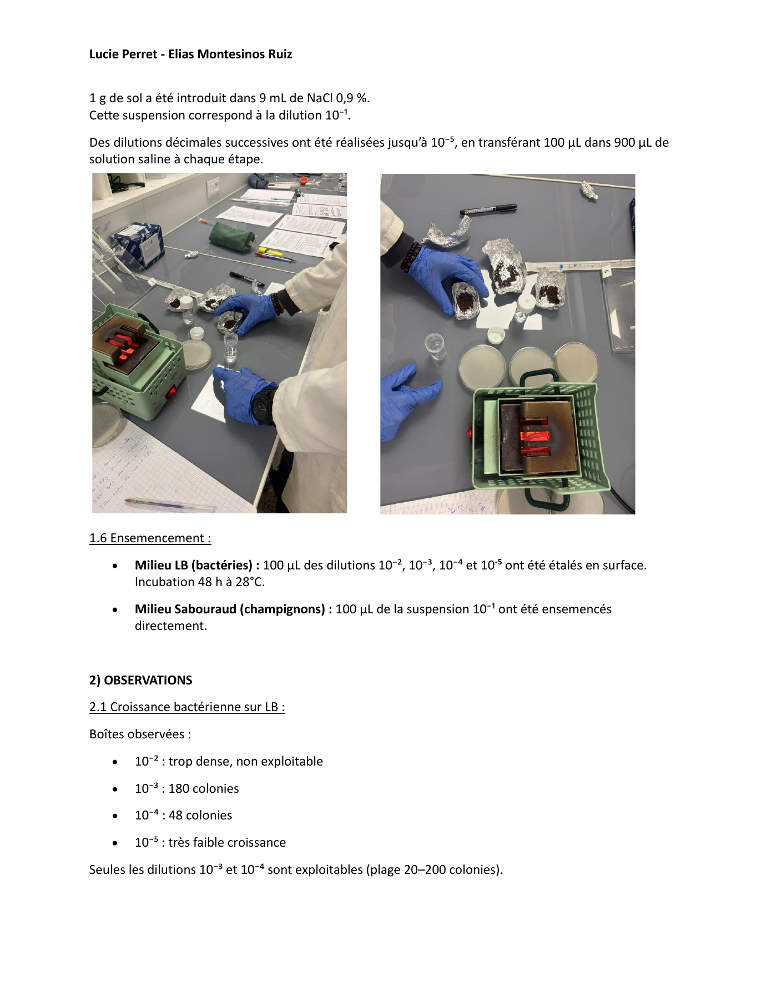
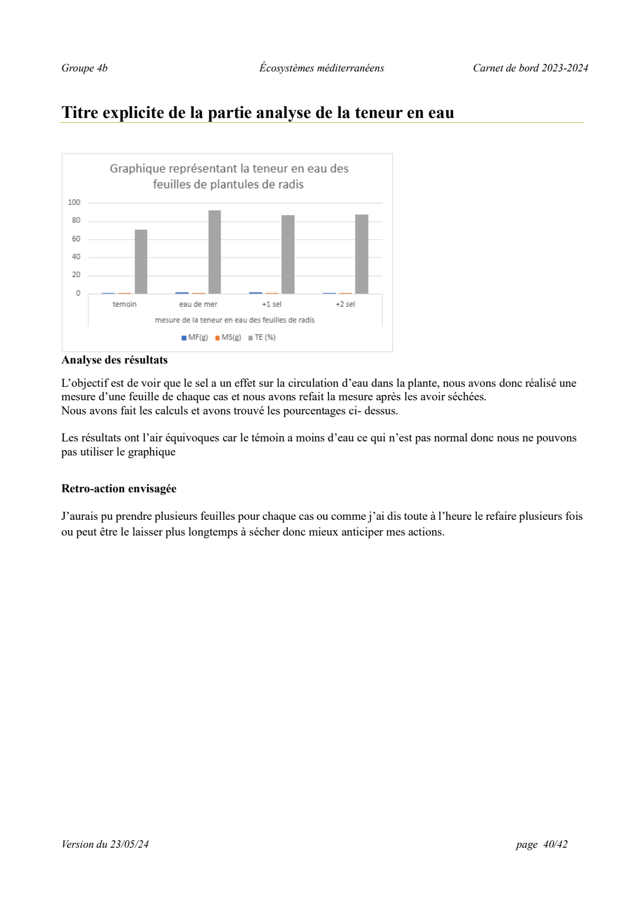
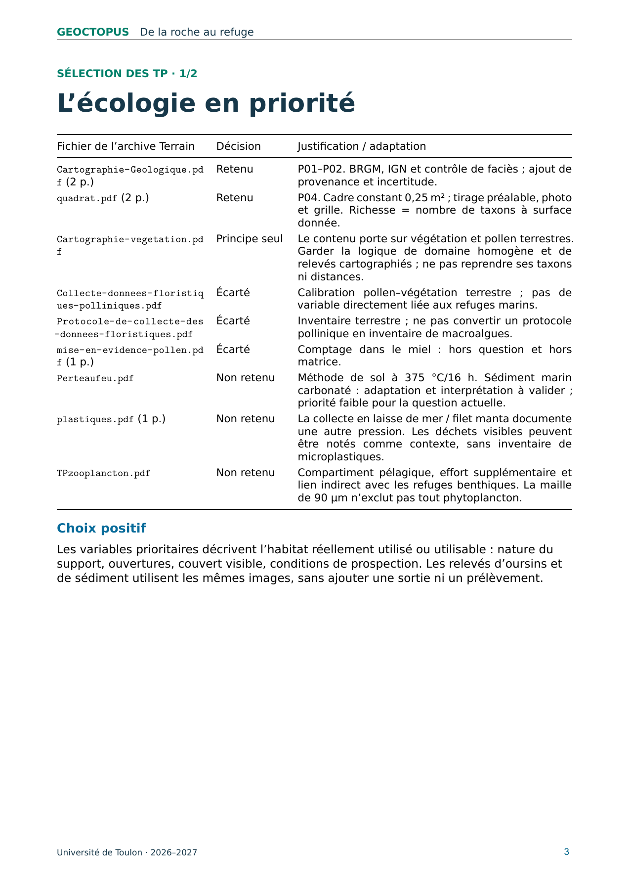

L1 · SAÉ12
Croissance des radis
Montage, reprise de l’expérience, mesures et discussion.
Voir la preuveMener une démarche expérimentale
Un fil conducteur dans ce dossier : Le type d’eau d’arrosage modifie-t-il la croissance des radis ?

Agrandir la preuveÀ regarder : La figure compare les conditions d’arrosage. La question est reformulée ici à partir du montage décrit ; elle ne préjuge pas d’un effet démontré.
Université de Toulon · Licence Sciences de la Vie
Ces repères décrivent les attendus de la formation. Ils ne constituent pas une validation de mes acquis. Les extraits du dossier indiquent ce qui est effectivement documenté.

Agrandir le référentielLes travaux de mon parcours
L1 · SAÉ12
Montage, reprise de l’expérience, mesures et discussion.
Voir la preuveL2 · Méthodes naturalistes
Dilutions, étalement, comptage et calculs : gestes que j’ai réalisés.
Voir la preuveL2 · Écosystème GO-4
Inventaire et traitement de nos mesures ; tableur brut non retrouvé.
Voir la preuveUne expérimentation effectivement suivie
L1 · SAÉ 12 · PREUVE PRINCIPALE · 2024–2025
J’ai suivi une expérience sur des radis arrosés avec quatre types d’eau. Le livret décrit quatre pots contenant chacun trois graines, les mesures répétées et les graphiques de germination et de croissance. Mon carnet conserve aussi la trace d’un échec initial : les radis sont morts, puis j’ai recommencé l’expérience. Il indique ensuite que j’ai terminé les tableurs.
La preuve associe une trace de réalisation, une difficulté rencontrée, une reprise de l’expérience et des résultats chiffrés. La figure 3 et son analyse montrent le passage des mesures à une comparaison entre conditions.
Portée et limites. Recul actuel : un seul pot par condition et trois graines par pot ne suffisent pas à établir un effet généralisable. Les graines d’un même pot ne sont pas des répétitions indépendantes du traitement. Une croissance différente ne prouve pas, à elle seule, la présence ni l’origine industrielle d’un polluant. Je conserve le résultat comme preuve de démarche, sans reprendre la conclusion causale trop forte du livret. La courbe nommée « germination » diminue par endroits : sans le tableur, je ne peux pas établir si elle compte les graines germées ou les plantules vivantes.
Préparer · recommencer · contrôler
Le montage de L1 comporte quatre pots avec trois graines chacun et quatre types d’eau. Mon carnet rapporte la mort des radis, puis une reprise de l’expérience. Cette difficulté me conduit à distinguer les conditions que je veux comparer de celles qui doivent rester contrôlées.
Avec le recul, trois graines dans le même pot ne sont pas trois répétitions indépendantes du traitement. Pour consolider l’expérience, je prévoirais plusieurs pots par condition, des volumes d’arrosage comparables et un suivi explicite du substrat, de la lumière et des dates. Ce sont des améliorations proposées aujourd’hui, pas un protocole que j’affirme avoir déjà appliqué.
Reprise de l’expérience : carnet p. 38 ; traitement p. 40 et 56 (nouvel onglet)Rigueur de l’observation et de la synthèse
L2 · SAÉ 421 · DONNÉES NATURALISTES · 2025–2026
J’ai construit le tableau d’inventaire de Giens en séparant les espèces indiquées comme observées sur le terrain de celles issues de la bibliographie. Mon carnet décrit ce travail à la première personne. Le tableau final montre concrètement cette distinction : cases cochées pour la flore observée et mention « Biblio » pour les données documentaires. J’ai également confirmé avoir réalisé le travail sur les données et les calculs de Giens ; les nombres repris dans les scripts viennent de nos mesures réelles.

Agrandir la preuveÀ regarder : Les cases cochées et la mention « Biblio » ne décrivent pas la même origine. Le carnet p. 15 m’attribue la construction du tableau, pas toutes les observations.
Le tableau final et le carnet se complètent : l’un montre le résultat, l’autre attribue la construction du tableau à mon travail. Cette preuve montre comment j’organise des données naturalistes sans confondre observation et information bibliographique.
Portée et limites. Ce tableau est une synthèse de présence, pas un relevé d’abondance ni une fiche de terrain datée pour chaque observation. Il ne permet pas d’attribuer toutes les observations à moi seul, ni de recalculer un indice de Shannon. Je ne présente donc pas les graphiques de diversité du projet comme une chaîne de calcul entièrement vérifiée. Le tableur de saisie n’a pas été retrouvé, par moi non plus. Les scripts conservent des valeurs saisies directement, mais pas toute la chaîne de calcul : la provenance mesurée est confirmée par mon témoignage, sans permettre de recalculer les indices depuis les relevés bruts.
Hygiène · sécurité · environnement
Le compte rendu de microbiologie décrit des manipulations près d’un bec électrique pour limiter les contaminations. J’ai confirmé avoir réalisé les étapes du TP. Cette trace concerne la rigueur des manipulations ; elle ne renseigne pas précisément mes équipements de protection ni la filière utilisée pour les déchets.
La preuve HSE reste partielle. Pour GEOCTOPUS, les précautions sont prévues dans le livret, mais aucune sortie n’a encore eu lieu. Prévoir une règle et montrer son application sont deux étapes différentes.
Lire la trace de manipulation, p. 2 (nouvel onglet)Outils informatiques et mathématiques
Dans le suivi des radis, mon carnet indique que j’ai terminé les tableurs. Les pages 53–54 montrent le graphique de croissance et son analyse ; la page 56 mentionne Excel et Inkscape. Le traitement est donc documenté, même si le fichier de calcul brut n’est pas reproduit ici.
À regarder : Comparer les conditions en lisant les axes et les unités. La figure permet de suivre le résultat du traitement, mais pas de recalculer chaque valeur sans le tableur.
Une manipulation réalisée · contribution confirmée le 24 novembre
L2 · Méthodes naturalistes · 2025–2026
Le compte rendu de microbiologie des sols, cosigné avec ma binôme, décrit une série de dilutions et les colonies observées sur les boîtes. J’ai confirmé avoir réalisé les dilutions, l’étalement, le comptage et les calculs. Cette confirmation précise mon rôle ; elle ne retire pas le caractère collectif du compte rendu.

Agrandir la preuveÀ regarder : Les dilutions permettent d’obtenir des boîtes comptables. Le document retient 180 et 48 colonies ; le passage aux unités par gramme demande de suivre le volume ensemencé et la convention de dilution.
Le calcul final n’est pas validé ici : la conversion par gramme doit être revue en vérifiant que le facteur de la suspension initiale n’est pas compté deux fois. Je distingue aussi colonies cultivables et ensemble des micro-organismes du sol. L’absence de croissance sur un milieu ne démontre pas une absence dans le sol.
Interpréter sans dépasser les données
L1 · SAÉ 22 · REGARD CRITIQUE · 2023–2024
Dans le livret intégré à mon carnet, je présente des pesées avant et après séchage d’une feuille par condition, puis un graphique de teneur en eau. J’y exprime un doute sur le témoin et propose de prendre davantage de feuilles, de répéter les mesures et de mieux contrôler le séchage.

Agrandir la preuveÀ regarder : Le désaccord avec l’hypothèse ne suffit pas à rejeter le témoin. Le nombre de feuilles, le séchage et les pesées doivent être contrôlés avant de conclure.
Cette page documente une analyse réellement rédigée à partir de mesures et une proposition d’amélioration du protocole. Elle complète la preuve de collecte en montrant que je peux revenir sur la qualité d’un résultat.
Portée et limites. Recul actuel : le fait que le témoin contredise mon attente ne suffit pas à invalider la mesure. Il faudrait contrôler les pesées, les calculs, l’état de séchage et la variabilité avant de décider. La page prouve une remise en question et des pistes d’amélioration, pas que ces vérifications ou ces répétitions ont ensuite été réalisées. Le graphique historique mélange grammes et pourcentages sur un même axe : je séparerais aujourd’hui ces unités dans deux représentations. Ce document de 2023–2024 est antérieur à la SAÉ12 sélectionnée (2024–2025).
Préparation et réalisation distinguées
Le nouveau dossier GEOCTOPUS rassemble le livret de protocoles, les cartes, la commande de matériel, le rétroplanning et un tableur de saisie. Le livret compare les méthodes possibles : certaines sont retenues, d’autres adaptées ou écartées parce qu’elles ne répondent pas directement à la question.

Agrandir la préparationÀ regarder : les colonnes « Décision » et « Justification/adaptation » relient les méthodes à la question. Elles documentent une préparation, pas une manipulation effectuée.
Aucune sortie réalisée à ce stade. Je compléterai ce travail au fil des sorties avec les fiches remplies et les photographies de terrain. Ma contribution précise à la rédaction du livret reste à distinguer du travail collectif.
Le tableur de préparation n’est pas présenté comme un jeu de résultats mesurés. Les choix prévus et leur mise en œuvre devront être confrontés après le terrain.
Lire sélection des méthodes et sécurité, p. 3 et 16 (nouvel onglet)J’ajouterai ici les photos, leur date, mon rôle et le lien avec les observations. Aucun visuel de sortie n’est inventé pour remplir cet espace.
L1 · L2 · L3
Les carnets des SAÉ12 et 22 montrent des mesures, des graphiques et une critique. Le contrôle des répétitions reste fragile.
À Giens, mon tableau sépare observation et bibliographie. Il ne permet pas d’attribuer toutes les observations ni de recalculer une diversité à partir de simples présences.
Les protocoles récents constituent une piste pour montrer l’anticipation. Leur préparation ne prouve pas une manipulation ni une analyse réalisées. L’autonomie expérimentale de L3 n’est donc pas déclarée acquise ici.
Ce sont des projets différents, pas deux versions du même document. Je compare ce qui m’est demandé et la façon dont je travaille.
Prendre du recul
Je sais mieux relier un résultat à la manière dont il a été obtenu. Les radis m’ont confronté aux difficultés du montage et aux limites des répétitions ; Giens m’a appris à expliciter l’origine des données. Mon prochain progrès sera de conserver ensemble les relevés bruts, les traitements et les contrôles. Un résultat inattendu doit être vérifié, pas écarté parce qu’il contredit mon attente.
Distinguer observation et bibliographie, comprendre le rôle des témoins et des répétitions, relier une mesure à ses conditions d’obtention.
Suivre une expérience, construire un tableau d’inventaire, effectuer des dilutions, compter et représenter les résultats.
Recommencer après une difficulté, signaler les données manquantes et rester prudent face à un résultat inattendu.
J’ai bien aimé Giens. La microbiologie, en revanche, n’est pas vraiment mon domaine de prédilection, même si j’ai réalisé les manipulations. Pour la suite, j’ai envie de développer davantage le travail de terrain autour de la faune.